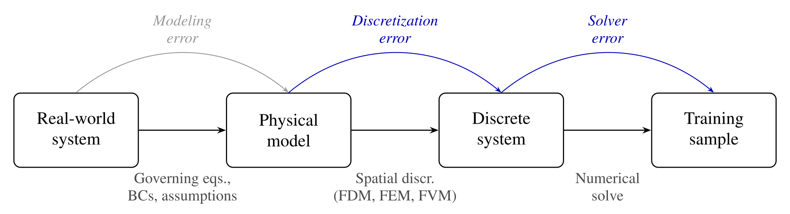
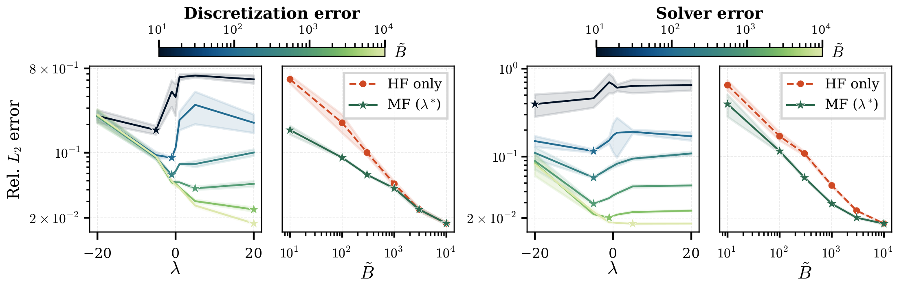
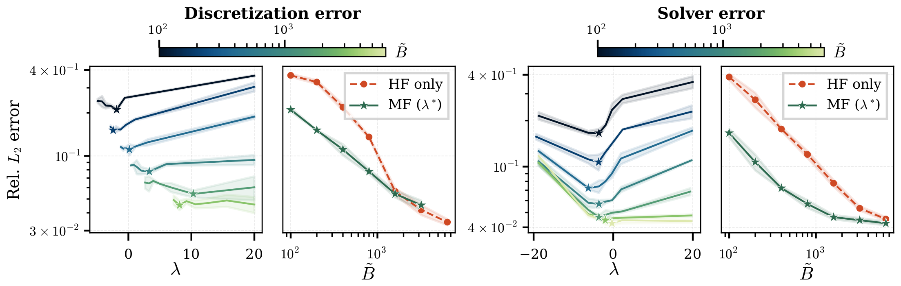
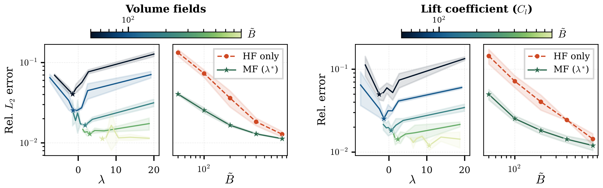
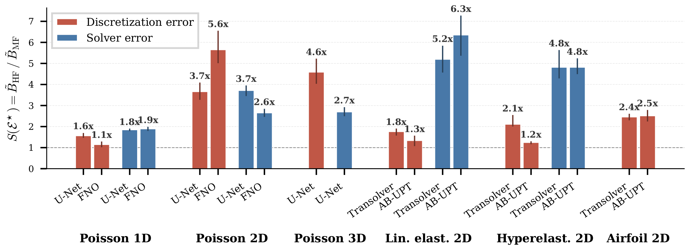

Abstract
Neural surrogates for Partial Differential Equations (PDEs) are usually trained on synthetic data from numerical simulators. As models grow and scaling laws demand larger datasets, the cost of data generation often outweighs the training cost and becomes the bottleneck in the scaling quest. Unlike data in other domains, however, each PDE sample has a tunable cost that depends on its numerical fidelity, with the resulting cost-accuracy trade-off governed by known convergence rates. We exploit this property by formalizing neural surrogate training as a function of both data quantity and fidelity under a fixed data generation compute budget, treating fidelity as a fine-grained discrete spectrum rather than a binary distinction. Building on this, we show that multi-fidelity training enables Pareto-optimal error scaling against data generation compute. By using simulations at lower fidelities as an additional training signal, training on the optimal fidelity mixture matches the accuracy of high-fidelity-only training, with up to 6.3× less data generation compute across our settings. We validate these findings across six PDE problems spanning structured grids and unstructured meshes, two distinct error sources (discretization and iterative-solver error), and four surrogate architectures, totaling over 7,000 training runs.
Data generation pipeline: the fidelity-cost trade-off
When we generate training data using numerical simulators, each sample has an associated non-negligible compute cost (measurable in e.g. FLOPs or CPU core-hours). Luckily, for a lot of problems, two of the error sources can be traded against compute with known convergence rates: the discretization error, and the solver error.

We denote fidelity as \(\xi\). Current datasets are generated at a single, fixed fidelity, and a given budget \(B\) then buys \(\lfloor B / c(\xi) \rfloor\) samples. This raises a natural question:
Treating fidelity as a spectrum
Instead of one fixed fidelity, we allow a discrete set of admissible fidelities \(\Xi = \{\xi_1, \dots, \xi_{|\Xi|}\}\), map them onto a normalized coordinate \(\hat\xi \in [0, 1]\) that is linear in the theoretical error, and draw the fidelity of each training sample from a softmax distribution:
A single parameter \(\lambda\) moves the dataset between many cheap samples (\(\lambda \to -\infty\)), a uniform mixture (\(\lambda = 0\)) and few expensive samples (\(\lambda \to \infty\), high fidelity only). Below you can explore the dataset composition of our linear elasticity dataset:
Linear elasticity, solver error axis: eleven fidelity levels of truncated solver iterations, where the high-fidelity level costs about 10× the cheapest one. The budget \(\tilde B\) is given in units of high-fidelity samples, so high-fidelity-only training gets \(\tilde B\) samples. Hover over the bars for the number of samples per level.
Pareto-optimal data scaling
For each budget \(\tilde B\), we train surrogates on mixtures over a range of \(\lambda\). The surrogate receives the fidelity \(\hat\xi\) of each training sample as an additional input, and we always evaluate it at \(\hat\xi = 1\) on a high-fidelity test set, so every model is measured against most accurate reference. The best mixture at each budget, \(\lambda^\star(\tilde B)\), traces the compute-optimal Pareto front, which we compare against training on high-fidelity data only. Our experiments span structured grids and unstructured meshes, two error sources and four architectures:
| Domain | Physics | Data format | Discretization | Solver | Architectures |
|---|---|---|---|---|---|
| Mathematical PDEs | Poisson equation | 1D, 2D, 3D grids | ✓ | ✓ | FNO, U-Net |
| Structural mechanics | Linear elasticity | 2D meshes | ✓ | ✓ | AB-UPT, Transolver |
| Hyperelasticity (nonlinear) | 2D meshes | ✓ | ✓ | AB-UPT, Transolver | |
| Fluid dynamics | RANS (airfoils) | 2D meshes | ✓ | – | AB-UPT, Transolver |
In all settings, the optimal mixture lies in the interior at small and medium budgets, i.e. it beats high-fidelity-only training, and moves towards high fidelity as the budget grows, until both scaling curves converge.



Savings in every setup
Across all 20 combinations of problem, error source and architecture, multi-fidelity training reaches the same error as high-fidelity-only training at a lower data generation cost: up to 6.3×, and ~3.1× on average.

BibTeX
@inproceedings{setinek2026multifidelity,
title = {Compute-optimal data scaling for neural surrogates via multi-fidelity training},
author = {Setinek, Paul and Paischer, Fabian and Thuerey, Nils and Brandstetter, Johannes and Koehler, Felix},
booktitle = {Advances in Neural Information Processing Systems},
year = {2026}
}